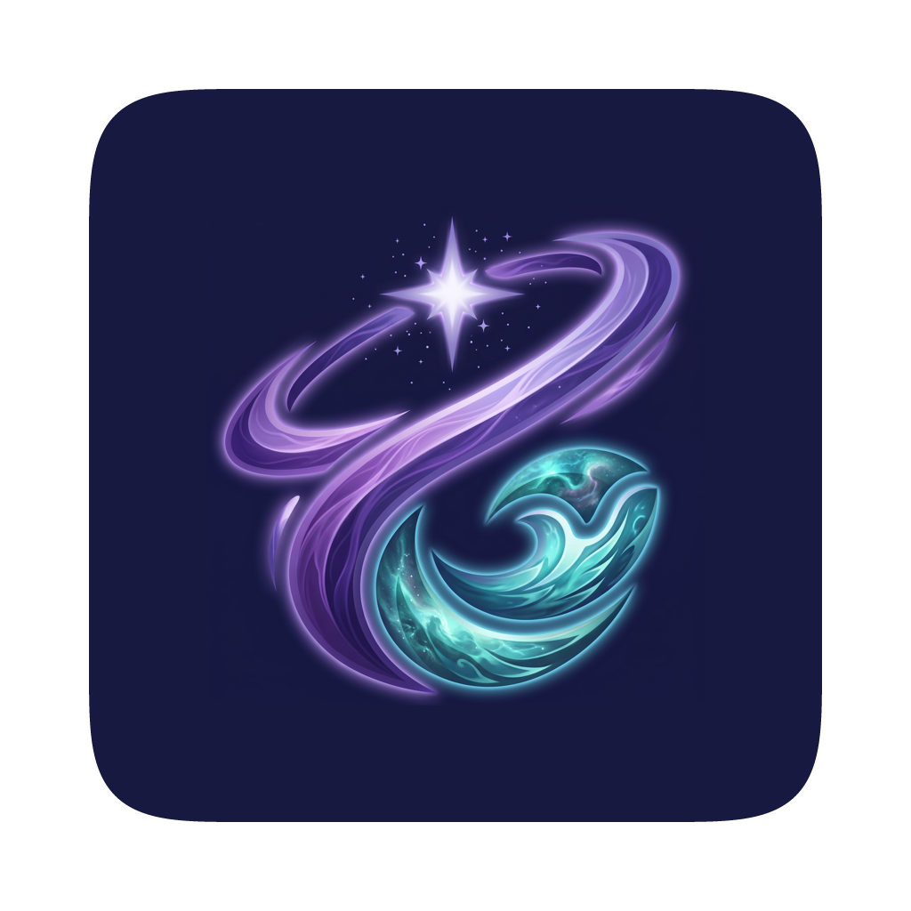

Downloads
The personal mesh is designed to share encrypted local history between Mac and iPhone through AstralKernel, with voice processing on device.

AstralDeep for Mac
Meshes created in iPhone build 99 require Mac 2.0.24 (97) or later. Update your Mac before joining.
Join your iPhone mesh from Mac
- On the updated Mac, choose Join My Mesh, then Show a code on this device instead.
- On the iPhone already in your mesh, choose Devices → Add Device → The new device shows a code instead → Continue → Scan Code, then scan the Mac's QR code.
- Compare the code on both devices and approve on the iPhone.
Instead of scanning, use Copy or Share to transfer the whole invitation or pairing request. The short displayed digits are for comparison or reference; entering them alone will not join the mesh.
Your previous mesh and history are retained separately. This update does not move them into the new mesh. Keep your existing mesh files and Keychain items.
Creating or joining a personal mesh does not require server sign-in.
CLI Tools
AstralVessel
0.7.0
Install the command line and follow the guide to build and run a personal AstralDeep node.
Install AstralVesseliPhone
iPhone release in preparation
Optional Mac node and agent pack
Android and Windows connect through a node.